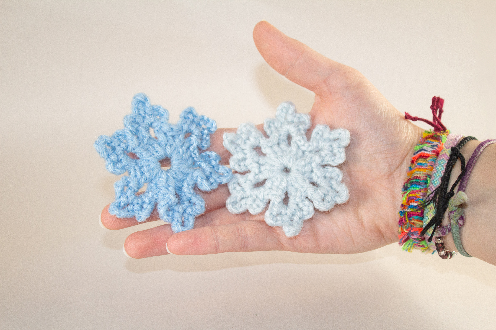

Gallery
Single Blue

Single Blue and white

I found this pattern for free on Wishes In The Rain. The creator has 6 different types of snowflakes to make, one type being a smaller and more simple variation of one of the existing patterns. By nature of the patterns, sizes will vary, but no 2 snowflakes are ever the same anyways! Adjusting yarn and hook sizes will also change up the snowflake size. I love how easy these patterns are, and I think they are a fun way to practice those basic stitches for bigger projects along the way.